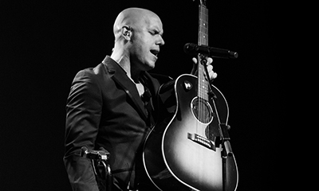

|
Mi Perfil

|
Gian Marco Javier Zignago Alcóver
Cantante y compositor peruano.
Sus canciones de las cuales es autor, se han vendido millones de copias, los premios
obtenidos como el Grammy Latino al Mejor Álbum Cantautor y Mejor Voz en los años 2005, 2011, 2012
y su nombramiento como "EMBAJADOR DE LA BUENA VOLUNTAD" por UNICEF son algunos de los reconocimientos obtenidos
en mas de sus 20 años de trayectoria profesional.
|